Architectures & Paradigms
How a model is built, and the algorithms it learns by.
12 papers
Written by Junkun Yuan.
Click here to go back to main contents.
Table of contents ▶
Papers are displayed in reverse chronological order. High-impact or inspiring works are highlighted in red.
Generative Modeling Paradigms
Improved Mean Flows: On the Challenges of Fastforward Generative Models
CMU · MIT · Adobe · THU
Conference on Computer Vision and Pattern Recognition (CVPR), 2026
Dec 01, 2025 iMF (120) code (355)
Recast MeanFlow's self-written target as plain velocity regression, and turn its frozen guidance scale into one more test-time condition.
Insight. Check what a self-written target really regresses: the tangent carried the conditional velocity it should never see; network-only tangents, and the guidance scale and interval as inputs, make fastforward models cleaner, more flexible and better at one step, 1.72 FID at XL size.
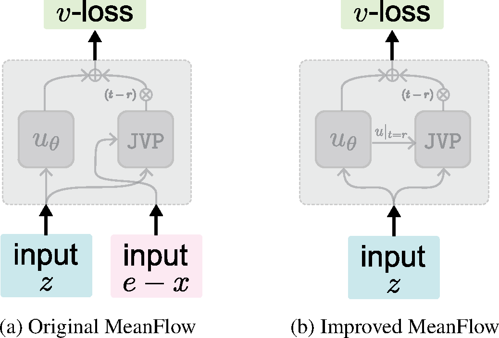
-
What MeanFlow regresses (§3, Eq. 4–7). MeanFlow identity (Eq. 4), with (Eq. 5), makes trainable: target (Eq. 6) is fitted by (Eq. 7) — standing for in both places.
-
The identity read backwards (§4.1, Eq. 8–10). Solve for (Eq. 8), make it as (Eq. 9) and minimize (Eq. 10) — fully equivalent to Eq. 6–7, and now a v-loss re-parameterized by u-pred.
-
The input that should not be there (Eq. 11, Fig. 1a). Written out, that compound function is , reading the conditional velocity as a second argument — illegitimate for a regressor of , and traceable to Eq. 6, which put the conditional where Eq. 5 asks for the marginal.
-
Predict the tangent instead (Eq. 12). (Eq. 12) — both arguments are now network outputs of alone. Stop-gradient survives, but inside the prediction rather than on the target, kept because dropping it brings second-order gradients in .
-
Two cheap (§4.1, Tab. 1a). The boundary condition is free — FID 32.69 → 29.42 unguided, 3.43 → 2.99 on XL/2. An auxiliary -head over the last 8 layers, on its own flow-matching loss, free at inference, does worse unguided, 30.76, better guided, 5.68.
-
Why the conditional tangent hurts (§4.1, Eq. 2, Fig. 3). Feeding to the loss leaks nothing, since the true regression target is the marginal ; but as the JVP's tangent its variance is magnified by the Jacobian it multiplies, which the two loss curves separate.
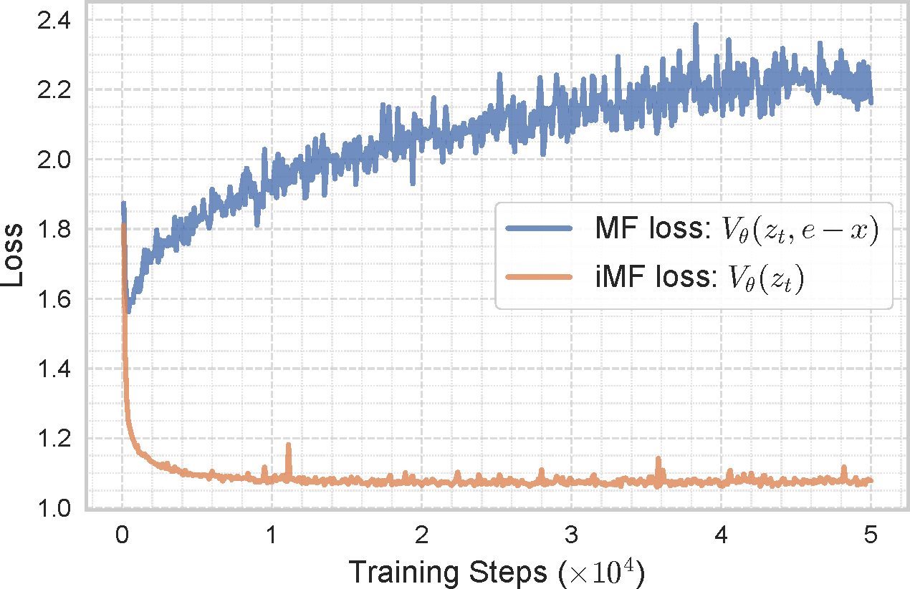
-
Guidance, fixed and unfixed (§4.2, Eq. 13–15). MeanFlow bakes (Eq. 13) in at one fixed before training. iMF makes it an input, (Eq. 15), with drawn on , skewed to small .
-
The target it fits (App. A, Eq. 17). (Eq. 17) is MeanFlow's guided target with an input, so means no guidance. FID 5.68 → 5.52, small only because MeanFlow's fixed already suited the B/2 model.
-
The interval is a condition too (§4.2, Tab. 1b). Pass , sampling and and switching guidance off () when falls outside — 5.52 → 4.57, while the column itself improves 30.76 → 20.95, so training across scales generalizes.
-
In-context conditioning (§4.3, Eq. 16, Tab. 1c). (Eq. 16) is too heterogeneous for one adaLN-zero to sum; replicate each into tokens — 8 for the class, 4 for the rest — concatenated with the image patches: 4.57 → 4.09, and 133M → 89M once adaLN is gone.
-
Experiments (§5). ImageNet-256 in the VAE latent, from scratch, 1-NFE FID-50K on MeanFlow's code and B/2 baseline: the changes step 6.17 → 5.68 → 4.57 → 4.09, SwiGLU, RMSNorm and RoPE 3.82, 640 epochs 3.39 at 89M; iMF-XL/2 takes 1.72 at 1-NFE and 1.54 at 2-NFE.
-
The size labels do not calibrate (§5.2, Tab. 2). Without adaLN-zero, parameters go to depth: iMF-XL/2 has 48 layers, 610M and 174.6 Gflops to MF-XL/2's 28, 676M and 119.0, so 1.72 against 3.43 is not at matched FLOPs; iMF-M/2's 2.27 at 49.9 Gflops over MF's 5.01 at 54.0 is.
The training and sampling algorithm and its code. Follow Algorithm 2 of paper.
def train():
# 1. Sample timesteps r and t from lognorm(-0.4, 1.0), sorted so r <= t; 50% of rows get r = t
r, t = sample_time_steps(bs)
# 2. Sample the guidance scale and interval; rows with r = t get the full interval [0, 1]
omega = sample_cfg_scale(bs) # omega ~ omega^-beta on [1, 8]; assume beta=1
t_min, t_max = sample_cfg_interval(bs, r == t) # t_min ~ U[0, 0.5], t_max ~ U[0.5, 1]
# 3. Build the noisy latent z_t and its velocity v_t
z_t = (1 - t) * z_0 + t * noise # linear path
v_t = noise - z_0 # conditional velocity
# 4. Predict the average velocity u and the instantaneous velocity v with a class dropout
dropped = rand(bs) < 0.1 # 10% class dropout
y_in = where(dropped, null, y)
u, v = model(z_t, r, t, omega, t_min, t_max, y=y_in) # Eq. (16); omega and the interval are inputs
# 5. Predict cond and uncond instantaneous velocity at t with the v head; omega = 1 outside the interval
omega_t = where((t >= t_min) & (t <= t_max), omega, 1)
with no_grad():
v_c, v_u = model(cat([z_t, z_t]), cat([t, t]), cat([t, t]), cat([omega_t, ones]), cat([zeros, zeros]),
cat([ones, ones]), y=cat([y, null]), predict_u=False).chunk(2)
# 6. Build the guided velocity target
v_target = v_t + (1 - 1 / omega_t) * (v_c - v_u) # Eq. (17)
v_target = where(dropped, v_t, v_target)
# 7. Build the compound prediction V, with the predicted v_c as the JVP tangent
fn = lambda z, r_, t_: model(z, r_, t_, omega, t_min, t_max, y=y_in, predict_v=False)
_, dudt = jvp(fn, (z_t, r, t), (v_c, zeros_like(r), ones_like(t))) # no_grad, so dudt is sg(du/dt)
V = u + (t - r) * dudt # Eq. (15)
# 8. Calculate loss of the u head and the auxiliary v head
loss = adaptive_loss(V - v_target) + adaptive_loss(v - v_target) # sum of squared error / (sg(.) + 0.01)^1
loss = loss.mean()
def sample():
time_steps = linspace(1, 0, num_steps + 1)
for i in range(num_steps):
t = full((bs,), time_steps[i])
r = full((bs,), time_steps[i + 1])
u, _ = model(z, r, t, omega, t_min, t_max, y=y, predict_v=False) # guidance is a condition: one forward
z = z - (t - r) * uBack to Basics: Let Denoising Generative Models Denoise
MIT
arXiv, 2025
Nov 17, 2025 JiT code (2.5K)
Predict the clean image rather than the noise, and a plain ViT on raw pixel patches becomes a strong diffusion model at any resolution.
Insight. Match what the network must emit to where the data actually lives: a target lying on a low-dimensional manifold can be produced by a network narrower than the space around it, which is what lets a tokenizer-free Transformer run on raw high-dimensional pixels without a VAE.
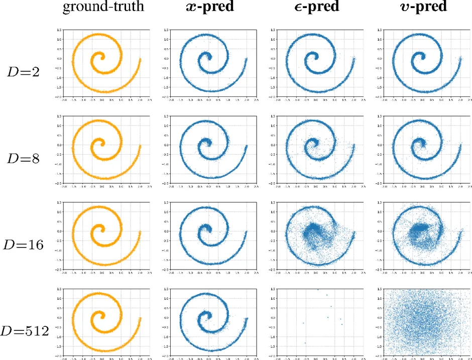
-
Noise is off-manifold, data is not (§3.3). Data lies near a low-dimensional manifold; and do not, carrying the noise. A network asked for may keep only the manifold coordinates, so width is no obstacle; one asked for or must carry dimensions through its layers.
-
Flow setup (§3.1, Eq. 1–4). Eq. (1) on a linear noise schedule with , so that is data; the velocity is Eq. (2); training minimizes Eq. (3) and sampling solves Eq. (4) with a 50-step Heun solver.
-
Nine formulations, none equivalent (§3.2, Eq. 5, Tab. 1). Where the loss lives and what the network emits are independent choices: Eq. (1) and Eq. (2) are two constraints, so one output determines the other two — from , and Eq. (5). Three loss spaces times three prediction spaces give nine formulations, each a legitimate generator since any output maps back to .
-
The one they pick (§4.3, Eq. 6). -prediction under the -loss: with Eq. (6), the denominator clipped at 0.05. The network's output is the denoised image; the velocity is a transform applied after, not a second head.
-
Just image Transformers (§4.1). Plain ViT — patches linearly embedded, blocks with adaLN-Zero for and class, a linear layer to pixels; no tokenizer, perceptual loss, pre-training. JiT/16, /32, /64 at 256, 512, 1024 keep 16×16 tokens: flat compute, patches to 12,288-d.
-
Only -prediction survives a wide patch (§4.2, Tab. 2). JiT-B/16 at 256, where a 768-d patch meets a 768-d hidden size: -prediction gives 8.62–10.45 FID across the three losses, -prediction 96.53–126.88 and -prediction 372–395. Shrink the patch to 48-d (JiT-B/4 at 64×64, same sequence length) and all nine land between 3.46 and 6.20 — which is why latent diffusion, with its small input dimension, never met this.
-
Three plausible fixes that are not enough (§4.2, Tab. 3, Eq. 7–8). (1) Reweighting: -prediction works in all three loss spaces, the others in none. (2) More noise helps only what works: 0 → −0.8 takes -prediction 14.44 → 8.62 while -prediction sits at 372. (3) EDM preconditioning Eq. (7)–(8) cannot help: mixes noise back in again; and its 28.94–72.05 beats / only because it nears -prediction as .
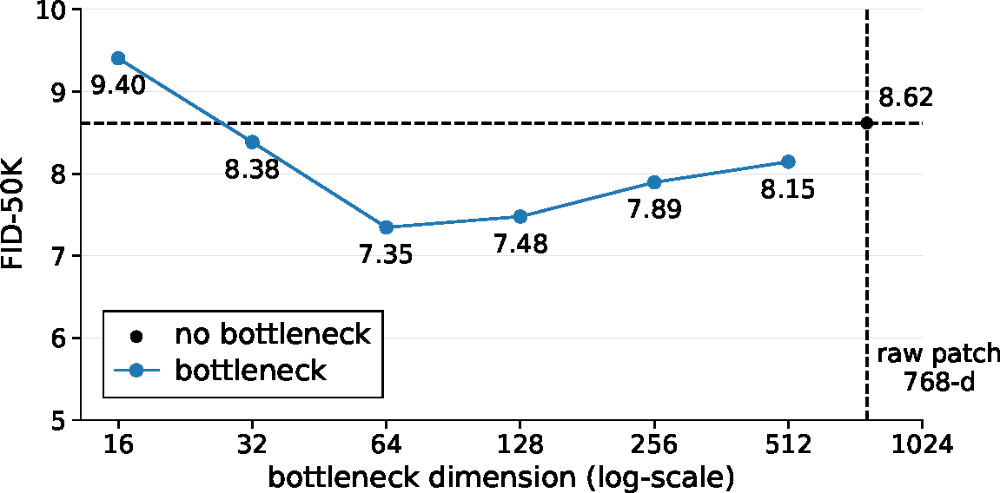
-
Width need not match the patch; less can be better (§4.2). Two linear layers through in the patch embedding cut FID, 8.62 → 7.35 at , 9.40 even at : classical manifold learning — the network told the useful part is low-dimensional, width freed from .
-
Just advanced Transformers (§4.4, Tab. 4). A task-agnostic architecture inherits language-model engineering: SwiGLU and RMSNorm as the base, RoPE and QK-norm, then 32 in-context class tokens at a middle block — 7.48 → 6.69 → 5.49 on JiT-B/16, 4.37 with a CFG interval.
-
Experiments (§5, Tab. 5–8). ImageNet at 256, 512 and 1024 by FID-50K and IS, sequence length pinned at 16×16. Four sizes at 600 epochs: 3.66 / 2.36 / 1.86 / 1.82 at 256 and 4.02 / 2.53 / 1.94 / 1.78 at 512; JiT-H/16 reaches 1.86 on 182 Gflops against a latent DiT-XL/2's 2.27 on 119, and at 512 JiT-G/32 is 1.78 on 384 Gflops where pixel baselines spend 555–653 — all without tokenizer, perceptual loss or pre-training.
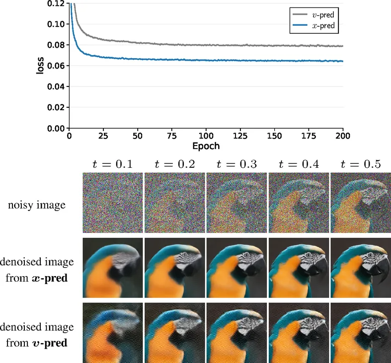
-
The native parameterization fits its own loss worse (App. B.1). With the loss held in -space, -prediction converges ~25% higher than -prediction and -prediction ~3× higher, unstably: the FIDs are no sampling artifact; the regression is harder, and the ODE accumulates it.
-
At scale the harder resolution is the easier problem (Tab. 6). JiT-G/32 at 512 reaches 1.78 against JiT-G/16's 1.82 at 256, and the gap closes as models grow — the paper reads 512 denoising as the harder task, hence less prone to the overfitting that decides FID here. The bill: the G models need dropout 0.2 and early stopping near 320 epochs, and every entry has CFG scale and EMA decay swept at inference.
The training and sampling algorithm and its code. Follow Algorithm 1 and 2 of paper.
def train():
# 1. Sample a time from the logit-normal; mu sets the noise level and the noise scales with resolution
t = sigmoid(randn(bs) * 0.8 - 0.8) # logit(t) ~ N(-0.8, 0.8^2)
e = randn_like(x) * (resolution / 256) # 2x at 512, 4x at 1024, to hold the signal-to-noise ratio
# 2. Interpolate, and read the velocity off the same two points
z = t * x + (1 - t) * e # Eq. (1); t = 1 is data
v = (x - z) / clip(1 - t, min=0.05) # equals x - e of Eq. (2); the clip guards every 1 / (1 - t)
# 3. The network emits the clean image; the velocity is a transform of it, not a second head
x_pred = net(z, t, y) # x-prediction, the only output that stays on the data manifold
v_pred = (x_pred - z) / clip(1 - t, min=0.05) # Eq. (6)
# 4. v-loss on an x-prediction: Tab. 1, row (3), column (a)
loss = (v_pred - v).square().mean() # Eq. (6)
def sample():
# 1. 50 Heun steps over times linear in [0, 1]; class dropout at 0.1 makes the CFG branch, omitted here
z = randn(shape) * (resolution / 256)
for t, t_next in zip(times[:-1], times[1:]):
v = (net(z, t, y) - z) / clip(1 - t, min=0.05) # Alg. 2
z_euler = z + (t_next - t) * v
# 2. Second evaluation at the far end, then the trapezoidal average
v_next = (net(z_euler, t_next, y) - z_euler) / clip(1 - t_next, min=0.05)
z = z + (t_next - t) * (0.5 * v + 0.5 * v_next)Mean Flows for One-step Generative Modeling
CMU · MIT
Advances in Neural Information Processing Systems (NeurIPS), 2025
May 19, 2025 MeanFlow (630) code (616)
Model the average velocity over an interval, not the instantaneous one — a one-step generator from scratch, with guidance in the field.
Insight. Model displacement over an interval rather than instantaneous velocity: a one-step generator falls out of an identity the network must satisfy, trained from scratch with one JVP — the template for self-consistent fastforward models, with classifier-free guidance folded into the field itself.
-
Average velocity (§4.1, Eq. 3). — displacement across , a field induced by itself and by no network; , and integral additivity already gives , consistency with nothing imposed.
-
The MeanFlow identity (Eq. 6). Multiply the definition by and differentiate in with fixed; the product rule and the fundamental theorem give , that is — the intractable integral traded for a local relation between the fields.
-
One JVP computes it (Eq. 8, Tab. 1b). , since , : a Jacobian–vector product with tangent , one extra pass. Corrupt it and one-step collapses — 61.06 FID against 137.96–329.22.
-
The objective (Eq. 9–11). with : the network's own partials stand in for those of the true , the conditional for the marginal, and stop-gradient removes double backpropagation. Zero loss recovers the identity of Eq. 3.
-
Sampling (§4.1, Eq. 12). — the integral is the prediction, so is one call; few steps chain it.
-
Guidance inside the field (§4.2, Eq. 19). Define and average it; since , the unconditional half is the network's own diagonal, , so guidance stays a single call ( gives 15.53).
-
Guidance, improved (App. B.1, Eq. 21, Tab. 5). A mixing scale lets the class-conditional diagonal into the target as well: ; solving it gives Eq. 13's form at the effective scale . At a fixed , from 0 to 0.9 takes the 1-NFE FID 20.15 → 18.63; the released XL/2 ships , .
-
Adaptive loss weighting (§4.3, App. B.2, Tab. 1e). For the error , the powered loss equals the squared loss under the weight , , , applied as : gives 61.06, Pseudo-Huber-like 63.98, plain 79.75.
-
Two clocks (§4.3, Tab. 1a/c/d). come from lognorm, and , and only 25% of pairs keep — at 0% the correction vanishes, the loss is exactly flow matching and 1-NFE fails (328.91 against 61.06). The network is fed , best of four embeddings.
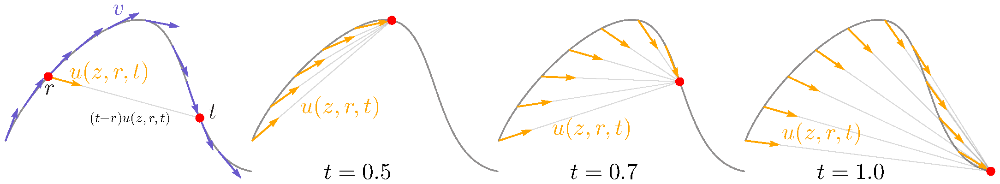
- Experiments (§5). ImageNet-256 in a VAE latent, FID-50K at 1-NFE, plus CIFAR-10: B/2 to XL/2 reads 6.17 / 5.01 / 3.84 / 3.43 at 240 epochs (Shortcut 10.60), 2.20 at 2-NFE trained longer, DiT-XL/2's 2.27 at 250×2; CIFAR-10 2.92 without EDM preconditioning, against iCT's 2.83.
The training and sampling algorithm and its code. Follow Algorithm 1 and 2 of paper.
def train():
# 1. Sample timesteps r and t from lognorm(-0.4, 1.0), sorted so r <= t
r, t = sample_time_steps(bs)
# 2. Build the noisy latent z_t and its velocity v_t
z_t = (1 - t) * z_0 + t * noise # linear path
v_t = noise - z_0 # conditional velocity
# 3. Predict the average velocity u with a class dropout
dropped = rand(bs) < 0.1 # 10% class dropout
y = where(dropped, null, y)
u = model(z_t, r, t, y)
# 4. Build CFG-guided velocity
with no_grad():
u_c, u_u = model(cat([z_t, z_t]), cat([t, t]), cat([t, t]), y=cat([y, null])).chunk(2)
v_tilde = 0.2 * v_t + 0.92 * u_c + (1 - 0.2 - 0.92) * u_u # Eq. 21; assume omega=0.2, kappa=0.92
v_hat = where((t <= 0.8) & ~dropped, v_tilde, v_t)
# 5. Calculate average velocity target
_, dudt = jvp(lambda z, r_, t_: model(z, r_, t_, y), (z_t, r, t), (v_hat, zeros_like(r), ones_like(t))) # Eq. 8
u_target = v_hat - (t - r) * dudt # Eq. 10
# 6. Calculate loss
loss = (u - u_target.detach()).square().flatten(1).sum(1) # Eq. 9
loss = (loss / (loss.detach() + 0.01)).mean() # p=1, c=0.01 as the official code; paper: c=1e-3
def sample():
time_steps = linspace(1, 0, num_steps + 1)
for i in range(num_steps):
t = full((bs,), time_steps[i])
r = full((bs,), time_steps[i + 1])
z = z - (t - r) * model(z, r, t, y=y)One Step Diffusion via Shortcut Models
UC Berkeley
International Conference on Learning Representations (ICLR), 2025
Oct 16, 2024 Shortcut Models (430) code (773)
One network, conditioned on step size, jumps any distance along the flow — trained in one run, with no teacher, schedule, or second stage.
Insight. Condition one network on how far it jumps and bootstrap its own targets: one run serves every budget, no teacher or second stage.


-
Why naive one-step fails (§2, Fig. 2). Flow matching learns the average direction over all pairings passing through ; at that average points at the dataset mean, so one big Euler step lands there — multimodal data is unreachable in a single step even at the optimum.
-
Condition on the step size (§3, Eq. 3). The shortcut is the normalized jump to the correct next point, ; at it is the flow itself, so shortcut models generalize flow matching — one model serves every budget from 128 steps to one.
-
Self-consistency instead of a teacher (§3, Eq. 4–5). One step equals two chained halves, : bootstrap targets come from the model itself, while a batch fraction at regresses flow matching. One run, ~16% extra compute.
-
A binary grid of step sizes (§3.1). 128 base units give eight shortcut lengths , each trained against two of the next size down, keeping bootstrap paths short; many-step quality matches the flow baseline, few- and one-step matches two-stage distillation.
-
Experiments (§5). CelebA-HQ-256 and ImageNet-256, every objective retrained on one DiT-B codebase at matched compute, FID-50K at 128 / 4 / 1 steps: 6.9 / 13.8 / 20.5 and 15.5 / 28.3 / 40.3 — past every end-to-end and two-stage method but progressive distillation's one step.
-
Bootstrapping still scales, and drives robots (§5.3–5.5). Unlike Q-learning, one-step FID keeps falling with size (DiT-XL: 10.6, 3.8 at 128 steps), and as a one-step policy on Push-T and Transport it scores 0.87 / 0.80 where a one-step diffusion policy collapses to 0.12 / 0.00.
The method straight from the repo, cut to the lines that carry the idea:
# One batch, two target kinds (targets_shortcut.py); 1/bootstrap_every of it bootstraps.
dt_base = ladder_index # the network is conditioned on the log2 exponent, not on dt itself
dt = 1 / 2**dt_base # the binary ladder [1, 1/2, ..., 1/128]
t = randint(0, 2**dt_base) / 2**dt_base # t lands only on multiples of dt
x_t = (1 - (1 - 1e-5) * t) * x_0 + t * x_1 # a 1e-5 noise floor, not an exact lerp
# Bootstrap targets: two half-steps of the model itself (EMA and CFG both optional).
v1 = model(x_t, t, dt_base + 1) # +1 = one rung down the ladder, step dt/2
x_mid = clip(x_t + (dt/2) * v1, -4, 4) # clipped midpoint - stability the paper never mentions
v2 = model(x_mid, t + dt/2, dt_base + 1)
v_target = clip((v1 + v2) / 2, -4, 4) # no grad flows through targets
# Flow-matching targets for the rest of the batch, on the finest grid.
t = randint(0, 128) / 128
v_target = x_1 - (1 - 1e-5) * x_0 # empirical velocity; dt_base = log2(128) encodes d = 0
# One loss serves both target kinds (train.py).
loss = mean((model(x_t, t, dt_base) - v_target) ** 2)Simplifying, Stabilizing and Scaling Continuous-Time Consistency Models
OpenAI
International Conference on Learning Representations (ICLR), 2025
Oct 14, 2024 sCM (292)
It made continuous-time consistency training work at scale — TrigFlow, tangent normalization and a JVP recipe that MeanFlow, rCM and the newer few-step families build on.
Simplify consistency models, stabilize the continuous-time limit by taming its tangent, scale to 1.5B: two steps within 10% of the teacher.
Insight. Derivative-based targets train at scale once their tangents are tamed: parameterization, normalization and a JVP through attention.
- The continuous-time limit (§2.2, Eq. 2). A consistency model maps any trajectory point to its start, . Discrete CMs match adjacent times, Eq. (1), from an ODE solver: solver error and a hand-tuned schedule. With , as the gradient is Eq. (2) with the tangent : solver-free, unstable until now.
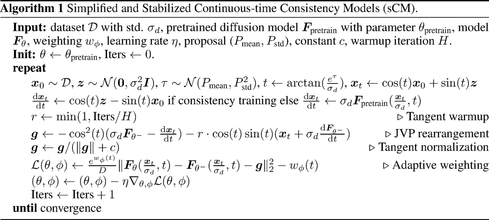
-
TrigFlow (§3, Eq. 5). With noise at the data's scale, , : EDM's , , ; the PF-ODE is Eq. (3), trained on Eq. (4) with ; the CM is a DDIM step, Eq. (5). EDM enters by ; flow matching is a special case.
-
Where the tangent blows up (§4.1, Eq. 7). Eq. (6): , the ODE and are tame, well-conditioned; the culprit is Eq. (7) — three factors, one fix each. Fig. 4, CIFAR-10: EDM at Fourier scale 16 sends the norm past 150, positional EDM still explodes at , TrigFlow stays under 4.
-
Three architectural fixes (§4.1). (1) : EDM's gives . (2) Positional time embeddings: the derivative of scales with ; positional means — iCT's scale, explained. (3) Adaptive double normalization, : raw AdaGN made CMs diverge; pixel-normalizing scale and shift keeps its expressivity.
-
Tangent normalization (§4.2, Fig. 5a). Most gradient variance rides on , so replace it by , , or clip it to : on ImageNet 512 either pulls 1-step FID well below the raw tangent's, and the two land together — applied before the weighting below.
-
Adaptive weighting (§4.2, Eq. 8, App. D). The identity turns Eq. (2) into an MSE, so EDM2's learned weight fits: Eq. (8), the prior weight turning into ; at the optimum each time's weighted loss is 1. Times come from , with , near clean data, where signal enters.
-
Diffusion init and tangent warmup (§4.2, App. G). Init is the teacher's EMA; the term is scaled by against gradient spikes. Distillation costs ~2× a diffusion step and reaches the teacher's 2-step quality within ~20k iterations, under 20% of its compute.
-
Discrete never catches up (§4.2, App. E, Fig. 5c). Every fix ports to discrete time through Eq. (37), one DDIM step away, which tends to as and replaces the JVP in Eq. (8) unchanged; on EDM-spaced levels (), FID improves with up to 1024, worsens past it from precision loss, and on ImageNet 512 the continuous model beats every .
-
JVP rearrangement (§5.1). The tangent overflows in FP16 near and . The loss needs , so the JVP is fed the tangent at — the scale folded in.
-
Flash-attention JVP (§5.1, App. F). For the output tangent is ; the two new terms need only a running vector and scalar , merged block by block like Flash Attention's — rescaled by , summed the same way — and read out as , so attention and its JVP come out of one pass, no attention matrix stored.
-
Sampling and guidance (§5.2, App. G). One step from , two steps re-noising to . On ImageNet 512 CFG is distilled in: the student takes the guidance scale as an input embedded like , the teacher at that scale; sCT, teacher-free, gets none.
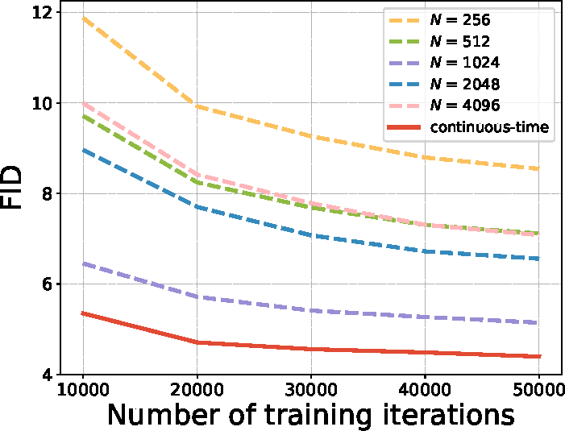

-
Experiments (§5.2, Tab. 1–2). CIFAR-10, ImageNet 64 and 512, FID at 1 / 2 steps for sCT and sCD: two steps already read 2.06 / 1.48 / 1.88 against teachers 2.01 / 1.33 / 1.73; 1-step sCD-XXL 2.28 beats StyleGAN-XL's 2.41 and VAR's 2.63 at under 10% of their compute.
-
sCD scales like its teacher; sCT does not in latent space (Fig. 6, Tab. 2). The sCD/teacher FID ratio holds at ~1.3 (one step) and ~1.09 (two) from S to XXL, so the gap shrinks; sCT wins at 64px but reads 10.13 against sCD's 3.07 at 512-S, variance blamed on the VAE latent.
-
VSD buys precision with recall; sCD keeps both (Fig. 7, Tab. 7). From guidance 1 to 2 VSD's recall collapses as under heavy guidance, as 2-step sCD tracks the teacher; VSD on top of sCD moves 1-step FID 2.75 → 2.67 but FD-DINOv2 83.78 → 54.81: the metrics disagree.
The training and sampling algorithm and its code. Follow Algorithm 1 of paper; sampling as in Appendix G.2.
def train():
# 1. Sample t from the log-normal proposal and build the TrigFlow sample x_t at the data's scale
tau = randn(bs) * 1.6 - 1.0 # CMs: ImageNet 64 P_mean=-1.0, P_std=1.6; ImageNet 512 -0.8, 1.6; CIFAR-10 -1.0, 1.4
t = arctan(exp(tau) / sigma_d)
z = randn_like(x_0) * sigma_d
x_t = cos(t) * x_0 + sin(t) * z
# 2. The ODE direction: the pair itself for sCT, the frozen teacher for sCD, run with CFG at a scale s
s = rand(bs) + 1 # guidance scale in [1, 2], also an input of the student; sCT drops s
dxdt = cos(t) * z - sin(t) * x_0 if consistency_training else sigma_d * teacher(x_t / sigma_d, t, s) # Eq. (3)
# 3. Forward the student, and a stop-gradient copy whose JVP returns cos(t) sin(t) sigma_d dF/dt
F = model(x_t / sigma_d, t, s)
tangent = (cos(t) * sin(t) * dxdt, cos(t) * sin(t) * sigma_d) # JVP rearrangement: the scales folded in upstream
with no_grad():
F_sg, cs_dFdt = jvp(lambda x, t_: model(x, t_, s), (x_t / sigma_d, t), tangent)
# 4. Build the target: cos(t) times the tangent of Eq. (6), warmed up, then normalized
r = min(1.0, iters / 10000) # tangent warmup, H = 10k
g = -cos(t) ** 2 * (sigma_d * F_sg - dxdt) - r * (cos(t) * sin(t) * x_t + cs_dFdt) # Eq. (6) times cos(t)
g = g / (norm(g) + 0.1) # tangent normalization, c = 0.1
# 5. Adaptive-weighted loss over the student and the weighting head w_phi
w = weight_net(t)
loss = (exp(w) / D * ((F - F_sg - g) ** 2).flatten(1).sum(1) - w).mean() # Eq. (8); D = dimension of x_0
def sample():
t_max = arctan(80 / sigma_d) # EDM's sigma_max = 80
x = randn(shape) * sigma_d * sin(t_max) # x_T without its cos(t_max) x_0 term
x = cos(t_max) * x - sin(t_max) * sigma_d * model(x / sigma_d, t_max, s) # Eq. (5), one step
if two_step: # re-noise to the fixed intermediate t = 1.1, then denoise once more
x = cos(1.1) * x + sin(1.1) * randn_like(x) * sigma_d
x = cos(1.1) * x - sin(1.1) * sigma_d * model(x / sigma_d, 1.1, s) # Eq. (5)Pyramidal Flow Matching for Efficient Video Generative Modeling
Peking University · Kuaishou Technology · Beijing University of Posts and Telecommunications
International Conference on Learning Representations (ICLR), 2025
Oct 08, 2024 Pyramid Flow (391) code (3.2K)
A spatial pyramid of denoising stages, only the last at full resolution, and a temporal pyramid of compressed history — one DiT, one loss.
Insight. Resolution is a free axis of the probability path: let noisy early timesteps run small and one flow matching loss fuses generation with super-resolution; each jump costs a renoising step, and the same compression on history buys long context cheaply, at the price of some subject drift.
-
Flow matching, with free endpoints (§3.1, Eq. 1–4). Eq. (1), fit by Eq. (2) on Eq. (3), Eq. (4), — and the two ends need not be a Gaussian and the data; any two distributions will do.
-
Pyramidal flow (§3.2, Eq. 5–6). Eq. (6) on windows with : each stage runs from a pixelated, noisier start to a finer, cleaner end, and only the last of stages runs at full resolution Eq. (5).
-
Unified training (§3.2.1, Eq. 7–11). Both endpoints are Gaussians around a resized of variances and , Eq. (7–8), drawn with one shared noise : Eq. (9), Eq. (10); the loss Eq. (11) trains generation and decompression in one network; the shared noise keeps paths from crossing.
-
Renoising at the jumps (§3.2.2, Eq. 12–15, App. A). Upsampling correlates pixels, covariance Eq. (12); a rescale plus corrective noise, Eq. (13), block-correlated with Eq. (14), restores Eq. (8); the least noise, , gives Eq. (15), — time rolls back a little; skipped, blocks appear.

- Temporal pyramid (§3.3, Eq. 16–17). History enters at a resolution falling with distance, Eq. (16), lightly noised at in training, clean at inference Eq. (17); tokens fall by up to , training cost by up to .

-
One plain Transformer (§3.4). Full attention over the shortened sequence, blockwise causal across frames — bidirectional loses coherence (Fig. 11); positions extrapolated across the spatial pyramid, interpolated across the temporal one; images trained as first frames.
-
Model and cost (§4.1–4.2, App. B). SD3-Medium's 2B MM-DiT, a from-scratch 8×8×8 VAE; three stages on 128 A100s — 50k image steps, 200k low-resolution video steps, 50k high-resolution steps on 5–10 s — 20.7k A100-hours; Open-Sora 1.2 spent 42.6k on 97 frames.
-
Experiments (§4.3, Tab. 1–2, Fig. 4). VBench and EvalCrafter on 5 s, 768p, 24 fps text-to-video from public data: VBench total 81.72 and quality 84.74 against Gen-3 Alpha's 82.32 / 84.11 and CogVideoX-5B's 81.61 / 82.75, EvalCrafter 244 against VideoCrafter2's 243.

-
Semantics lag, and the paper names the culprits (Tab. 1–2, App. C.1). Semantic score 69.62 trails every baseline, face consistency is its worst metric — coarse video-LLM captions, compressed history; SD3-Medium's human-structure failures carry into human action, 85.6.
-
Autoregression is also the limit (App. D). No keyframe interpolation, occasional long-term subject drift from the temporal pyramid, no scene transitions because the filter removed them, short prompts only because none were rewritten — admissions the leaderboard hides.
The training and sampling algorithm and its code. Follow Section 3.2–3.3 and Algorithm 1 of paper.
def train():
# 1. One Gaussian noise, downsampled twice and scaled by 2 each halving to keep unit variance: the noise pyramid
noise = [randn_like(x_1)]
for _ in range(2):
noise.append(2 * interpolate(noise[-1], scale=0.5, mode="bilinear"))
noise = noise[::-1] # coarse to fine, K = 3 stages
# 2. Pick a stage per sample and build its endpoints with the shared noise; sigma is the noise level, 1 - signal
k = randint(3)
sig_s, sig_e = start_sigma[k], end_sigma[k] # thirds of the global schedule; sig_s corrected so Eq. (15) holds
start = sig_s * noise[k] + (1 - sig_s) * upsample_nearest(down(x_1, 2 ** (3 - k))) # Eq. (10); noise at k = 0
end = sig_e * noise[k] + (1 - sig_e) * down(x_1, 2 ** (2 - k)) # Eq. (9); the clean latent at k = 2
# 3. Interpolate inside the stage; 1,000 training timesteps per stage, ratio 1 at the start
u = rand(bs)
x_t = u * start + (1 - u) * end # Eq. (6)
t = timesteps_per_stage[k][(u * 1000).long()] # the stage's slice of the global schedule
# 4. History at falling resolution, every clip lightly re-noised; 15,360 tokens at most for 241 frames, not 119,040
hist = [mix(down(x_1[:, :, :-j], 2 ** min(j, 2)), rand(bs) / 3) for j in range(1, n_units)] # Eq. (16)
# 5. Rectified-flow regression on the stage displacement; only the newest unit carries loss
v = model(cat(hist[::-1] + [x_t]), t, c) # blockwise causal attention over the whole sequence; 10% text dropout
loss = (v - (start - end)).square().mean() # Eq. (11)
def sample():
# One unit at a time; the first unit is an image, every later unit sees the compressed history
for unit in range(n_units):
x = randn(low_res_shape) # stage 0 starts from noise at 1/4 resolution
for k in range(3):
if k > 0:
x = upsample_nearest(x)
x = (1 + s_k) / 2 * x + sqrt(3) * (1 - s_k) / 2 * block_noise() # Eq. (15); n' ~ N(0, Sigma')
for sigma, sigma_next in stage_schedule(k): # 20 (10 for video) Euler steps per stage
v = cfg(model, cat(history(k) + [x]), sigma, c, scale=7.0 if unit == 0 else 5.0) # release scales
x = x + (sigma_next - sigma) * v
history.append(x)Improved Techniques for Training Consistency Models
OpenAI
International Conference on Learning Representations (ICLR), 2024
Oct 22, 2023 iCT (501)
Consistency training grown up — drop the teacher-side EMA, swap LPIPS for Pseudo-Huber, grow the discretization, and beat distillation.
Insight. A distilled student is capped by its teacher, and a borrowed perceptual loss can be the judge's leak: training from scratch with a plain distance and a growing discretization beats both at one and two steps — check what a loss borrows from the evaluator before crediting the objective.
-
Why leave CD and LPIPS (§1). Distillation caps a student at its teacher; LPIPS leaks ImageNet features into FID, whose Inception judge saw the same data. iCT drops both and wins anyway: one-step FID 2.51 on CIFAR-10 and 3.25 on ImageNet-64, past CD at one and two steps.
-
No EMA on the teacher network (§3.2). Of the two arguments tying CT to consistency matching, the gradient one holds only when ; with an EMA teacher the limit is not even a valid objective — a Dirac toy example breaks it. So , on the teacher side only.
-
Pseudo-Huber replaces LPIPS (§3.3). with sits between and : it beats outright and catches LPIPS once grows large — no feature network left to backpropagate through, and the heuristic scales with data dimensionality.
-
Schedules and small knobs (§3.1, §3.4–3.5). doubles from 10 up to 1280 across training; noise levels draw from a discretized lognormal (, ); weighting ; plus a smaller Fourier scale (0.02) and genuinely large dropout (0.3 on CIFAR-10).
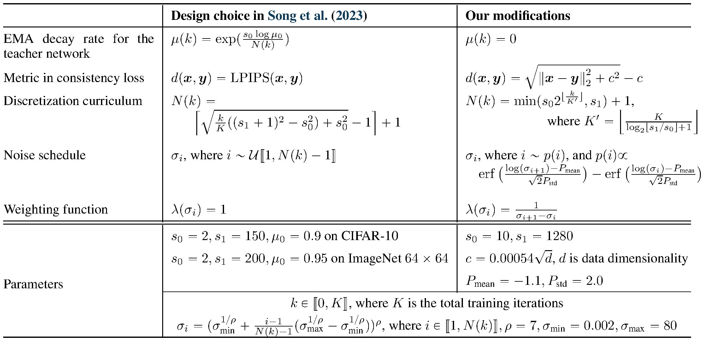
-
Experiments (§4, Tab. 2–3). CIFAR-10 and ImageNet-64 by FID, IS, precision and recall, GANs with pretrained discriminators excluded: iCT reads 2.83 / 2.46 at 1 / 2 steps on CIFAR-10 and 4.02 / 3.20 on ImageNet, iCT-deep 2.51 / 2.24 and 3.25 / 2.77 — past CD and TRACT.
-
Recall, and thin margins (§4). ImageNet-64 recall rises to 0.63 from CT's 0.47 and BigGAN-deep's 0.48; one-step iCT edges StyleGAN-ADA on CIFAR-10 (2.83 vs 2.92) and BigGAN-deep on ImageNet (4.02 vs 4.06); two-step iCT-deep's 2.24 ties Score SDE's 2.20 at 2000 steps.
Latent Consistency Models: Synthesizing High-Resolution Images with Few-Step Inference
Tsinghua University
arXiv, 2023
Oct 06, 2023 LCM (975) code (4.6K)
Consistency distillation moves into Stable Diffusion's latent space, swallows classifier-free guidance in one stage, and lands 768px in 2–4 steps.
Insight. Distill in the base model's latent space and fold guidance into the same stage: any pretrained text-to-image model becomes few-step.
-
Latent consistency distillation (§4.1). The consistency function moves to SD's latent space, , parameterized on the teacher's own noise prediction and initialized from it; the ODE solver — DDIM or DPM-Solver — appears only in training, never at inference.
-
Guidance folded in, one stage (§4.2). The augmented ODE runs on the guided noise — its solver estimate is two solver calls combined — with the student conditioned on . Guided-Distill took two stages and 45 A100-days; LCM, 32 A100-hours.
-
Skipping-step (§4.3). Adjacent times on SD's 1000-step schedule sit so close that the consistency loss nearly vanishes and convergence crawls; aligning with at cuts the effective schedule from a thousand points to dozens; convergence lands in 2,000 iterations.
-
Latent consistency fine-tuning (§4.4). A trained LCM adapts to custom image datasets without giving up its few-step inference.
-
Experiments (§5). LAION-Aesthetics-6+ (12M, 512px) and 6.5+ (650K, 768px) from SD2.1, FID and CLIP on 30K images at : 768px LCM reads 34.22 / 16.32 / 13.53 FID at 1 / 2 / 4 steps against Guided-Distill's 120.28 / 30.70 / 16.70 and DPM++'s 188.91 / 67.14 / 20.08.
-
Guided-Distill was reproduced small (§5). Its numbers are a re-implementation at batch 72, 100K iterations, not the paper's batch 512 on 32 A100s — an admitted handicap: the claim is faster convergence at equal compute, no ceiling; suits DPM/DPM++, breaks DDIM.
Consistency Models
OpenAI
International Conference on Machine Learning (ICML), 2023
Mar 02, 2023 Consistency Models (2,295) code (6.5K)
It opened the consistency route to one-step generation — self-consistency as the training signal, teacher optional — seeding a large family of few-step models.
One evaluation maps noise straight to data — learn the map from any ODE point to its origin, distilled from a teacher or trained from scratch.
Insight. Self-consistency along a trajectory is a training signal in itself: a one-step map needs no teacher, and refinement becomes optional.

-
The consistency function (§3, Fig. 1). sends every point of the probability-flow ODE to its origin, so sampling is a single network evaluation at ; self-consistency — every point of one trajectory shares an output — is the property both training modes below enforce.
-
The boundary condition (§3, Eq. 5). must be the identity, or solves everything; it comes almost for free from the skip form with , — the EDM-style shape that lets existing diffusion architectures drop in unchanged.
-
Consistency distillation (§4, Alg. 2). Noise an image to , take one teacher step back, and pull the two outputs together — the target side from an EMA copy, stopgradded. With LPIPS and : CIFAR-10 3.55, ImageNet-64 6.20 one-step, past PD everywhere but one point.
-
Consistency training (§5, Alg. 3). Swap the teacher's score for the unbiased estimate : the pair becomes and with one shared , no diffusion model anywhere — a standalone family that still matches PD's one step, with and grown on schedules.
-
Multistep sampling (Alg. 1). Alternate the model with re-noising to a lower level, time points picked greedily by ternary search; extra compute buys quality back, and mapping any to gives zero-shot inpainting, colorization, super-resolution and stroke-guided editing.


-
Experiments (§6). CIFAR-10, ImageNet-64, LSUN Bedroom / Cat by FID, IS, precision, recall, from EDM teachers: CD beats PD at 1–2 steps everywhere but one point and the synthetic-data distillers; CT, teacher-free, gets 8.70 / 5.83 on CIFAR-10, past every VAE and flow.
-
The metric is half the margin (§6.2). PD retrained with LPIPS improves uniformly on its (Fig. 4), so part of CD's lead is the metric, not the objective; Heun and come from EDM unchanged, and CT samples share structure with EDM's from one noise — no mode collapse.
Both trainers in one routine, straight from the repo, cut to the lines that carry the idea:
# The parameterization (karras_diffusion.py, denoise): f(x, s_min) = x by construction.
c_skip = sd**2 / ((sigma - s_min)**2 + sd**2) # EDM's scalings with sigma -> sigma - s_min
c_out = (sigma - s_min) * sd / (sigma**2 + sd**2)**0.5 # at s_min: c_skip = 1, c_out = 0
f = c_skip * x_t + c_out * unet(c_in * x_t, 250 * log(sigma)) # nothing left to learn there
# One routine serves both modes (consistency_losses): adjacent Karras levels t > t2.
x_t = x + t * z # noise a real image
pred = f(x_t, t, theta) # the trainable side; dropout RNG state saved here
with no_grad(): # one solver step t -> t2 builds the trajectory pair
denoiser = teacher_denoise(x_t, t) if distill else x # CT: the raw image is the score
d = (x_t - denoiser) / t # CD upgrades this to Heun with a second evaluation at t2
x_t2 = x_t + (t2 - t) * d
target = f(x_t2, t2, theta_ema).detach() # EMA copy, rerun under the student's dropout mask
loss = lpips(pred, target) # or plain l2; LPIPS inputs are resized up to 224px first
# Sampling is f(s_max * z, s_max); Alg. 1 re-noises lower and applies f again for quality.Flow Matching for Generative Modeling
Meta AI (FAIR) · Weizmann Institute of Science
International Conference on Learning Representations (ICLR), 2023
Oct 06, 2022 Flow Matching (6,755) code (4.8K)
It made the probability path a free design choice rather than a consequence of a diffusion process, and the straight-line path it proposed is what large image and video generators are now trained on.
A simulation-free objective for continuous normalizing flows, and an optimal-transport path whose trajectories are straight lines by design.
Insight. Specify the probability path directly instead of inheriting one from a diffusion process: once a per-example velocity is the regression target, the path is free to choose, and the straight choice trains faster, samples in fewer steps and became the default of the large flow models since.
Throughout, is noise and is data — the reverse of the diffusion convention.
-
A flow, and why it used to be expensive (§2, Eq. 1–4). A field defines a flow by Eq. (1), Eq. (2), carrying a prior to Eq. (3), the push-forward by change of variables Eq. (4). Likelihood training then solves that ODE at every step.
-
The objective one cannot use (§3, Eq. 5). Eq. (5) with : at zero loss the network's flow generates exactly . But neither the path nor the field that generates it is known in closed form, so the loss cannot even be sampled.
-
Build both by marginalizing (§3.1, Eq. 6–8, Thm. 1). Choose a per-example path that starts at the prior and ends concentrated on . Mixing over the data gives Eq. (6), which is at Eq. (7), and the posterior-weighted average Eq. (8) is exactly the field that generates it (Thm. 1), as a posterior-weighted average.
-
Conditional Flow Matching (§3.2, Eq. 9, Thm. 2). Regress the per-example field: Eq. (9). Theorem 2: the two differ by a constant in , so — Eq. (8) is never formed; one sample gives an unbiased gradient.
-
Every Gaussian path has a closed-form field (§4, Eq. 10–15, Thm. 3). Let Eq. (10) with . The affine map Eq. (11) pushes the prior onto it Eq. (12); Eq. (13) inverts to the field Eq. (15) (Thm. 3), turning the loss Eq. (14) into a closed-form regression for any .
-
Diffusion paths are one setting of the dial (§4.1, Eq. 16–19). Variance exploding is Eq. (16), giving Eq. (17); variance preserving is Eq. (18) giving Eq. (19), which is the probability-flow field of score-based models. Neither reaches a true Gaussian in finite time, so is only approximated — a mismatch the OT path avoids.
-
The optimal-transport path (§4.1, Eq. 20–22). , Eq. (20), so Eq. (21) and Eq. (22): straight lines, constant speed, the Wasserstein-2 map between the Gaussians Eq. (24).
-
The OT loss regresses a displacement (§4.1, Eq. 23). Substituting Eq. (22) into Eq. (9) gives Eq. (23): the target is the displacement itself, constant in , and Eq. (21) factors as , so the direction a network must predict never turns.


-
Experiments (§6, Tab. 1–2). One U-Net on CIFAR-10 and ImageNet 32/64, four objectives, by BPD, FID and adaptive-solver NFE. FM with the OT path wins every column — CIFAR-10 2.99 / 6.35 / 142 against DDPM's 3.12 / 7.48 / 274 and score matching's 3.16 / 19.94 / 242 — reaches FID 20.9 at ImageNet-128 at a third less throughput than the diffusion recipe, and upsamples 64 → 256 at FID 3.4 against SR3's 5.2.
-
Same path, better target (Tab. 1). Diffusion path fixed, objective swapped: CIFAR-10 FID 19.94 → 8.06, ImageNet-64 19.74 → 16.88 — part of the gain is the velocity target, not the path's geometry. The paper also calls its CIFAR-10 FIDs high: a U-Net tuned for ImageNet.
-
Only the conditional flow is optimal (§4.1). being an OT map between two Gaussians does not make the marginal field OT, the paper admits: each marginal point averages many , so trajectories can still bend. Straightness is a property of the target, not of the model.
The training and sampling algorithm and its code. Follow Section 4.1 and Equation 1 of paper.
def train():
# 1. One data point, one noise point, one time; t = 0 is noise and t = 1 is data
t = rand(bs)
x_0 = randn_like(x_1)
# 2. Walk the conditional path -- every Gaussian path is the affine map sigma(t) * x_0 + mu(t)
mu, sigma = t * x_1, 1 - (1 - 1e-5) * t # Eq. (20); OT path, sigma_min = 1e-5
x_t = sigma * x_0 + mu # Eq. (11); the released library pins sigma_min = 0
# 3. The target is that map's time derivative, closed form for any mu and sigma
u = x_1 - (1 - 1e-5) * x_0 # Eq. (15) at the OT path, i.e. Eq. (21) evaluated at x_t
# 4. Regress it; the marginal field of Eq. (8) is never formed
loss = (model(x_t, t) - u).square().mean() # Eq. (9), same gradient as Eq. (5) by Thm. 2
def sample():
# 1. Integrate dx/dt = v(x, t) from noise at t = 0 up to data at t = 1
x = randn(shape)
for t, t_next in zip(times[:-1], times[1:]):
x = x + (t_next - t) * model(x, t) # Eq. (1); the paper uses dopri5 at tolerance 1e-5Flow Straight and Fast: Learning to Generate and Transfer Data with Rectified Flow
University of Texas at Austin
International Conference on Learning Representations (ICLR), 2023
Sep 07, 2022 Rectified Flow (4,212) code (1.7K)
It named the straight-line interpolant that most large flow models now train on, and reflow — retraining on the model's own pairs — is the standard first move toward a one-step generator.
Learn an ODE that follows the straight line between two samples, then reflow on its own pairs until one Euler step is nearly enough.
Insight. A flow cannot cross itself: regressing it onto a crossing interpolation rewires the pairing into a cheaper, deterministic one — and repeating it on the model's own output straightens at a guaranteed rate, which is why one-step generation stopped needing a teacher's full trajectory.

-
Regress the line direction (§2.1, Eq. 1). The interpolation obeys , non-causal, needing . Causalize by fitting Eq. (1). Its minimizer is Eq. (2), averaging the lines through at .
-
Flows cannot cross, interpolations can (§2.1, Thm. 3.3). Two ODE paths cannot pass one point in different directions, so the fitted flow rewires crossings while keeping the density, , so is a coupling — causal, Markovian and deterministic.
-
Rectification is a Pareto descent on cost (§2.2, Thm. 3.5). for every convex : the rewired path is a sum of segments, by the triangle inequality. It targets no particular cost and reaches the OT map only in 1-D, as the monotone coupling.
-
Reflow (§2.1, Alg. 1). — simulate the flow, keep its pairs, fit a new flow to them, starting from independence. Each pass lowers cost and straightens; on the toy problem straightness is near zero after one pass while cost creeps down for twenty more.
-
Straightness, with a rate (§2.2, Eq. 3, Thm. 3.7). Eq. (3) is zero exactly when one Euler step is exact, which forces to solve the inviscid Burgers' equation . Theorem 3.7 bounds , so straightening is guaranteed — but each pass refits an estimate of an estimate, and the paper advises against many such passes.
-
Distillation is the other knob (§2.2). Fitting to is Eq. (1) with pinned at 0: it copies the existing coupling faithfully, where reflow replaces it with a cheaper one. So distillation is a last step, applied only once the flow is already very nearly straight.
-
Where the field comes from (§2.2, Eq. 4–5). With a conditional density , the optimal field has the form Eq. (4) with the normalized — enough to show it is well defined and Lipschitz for , and that the exact field would just reproduce the training points. A smooth approximator is thus required; the toy figures use a Nadaraya–Watson kernel estimate Eq. (5), not a neural network.
-
Curved paths are the general case, and stay curved (§2.3, Eq. 6–7, Prop. 3.11). Swap the straight interpolation for any differentiable curve and regress on Eq. (6): marginals survive, the cost guarantee and the straightening do not. Proposition 3.11 puts every probability-flow ODE and DDIM in this family as with of Eq. (7) — and since they take , their is only roughly Gaussian at best.

-
Experiments (§5, Tab. 1). Unconditional CIFAR-10 on one DDPM++ U-Net by FID, IS, recall against the VP and sub-VP ODEs, plus 256² LSUN, CelebA-HQ, AFHQ and unpaired translation. Solved with RK45, the first rectified flow leads the ODE methods at FID 2.58, recall 0.57, 127 evaluations; distilled to one Euler step, the second reaches 4.85 against 8.91 for the best one-step U-Net and 16.23 for distilled VP.
-
Reflow buys one step by spending the others (Tab. 1a). Over the RK45 FID rises 2.58 → 3.36 → 3.96, past the VP ODE's 3.93 by , while one Euler step falls 378 → 12.21 → 8.15; distilled, the second wins, 4.85 against the third's 5.21: straighter stops paying.
-
The first pass is already the better many-step model (Tab. 1a). Before reflow, the linear interpolant beats both diffusion ODEs on one net, 2.58 vs 3.16 and 3.93, on fewer NFE, 127 vs 146 and 140. Straight is not just easier to discretize; under a full solver it fits better.
The training, reflow and sampling algorithm and its code. Follow Algorithm 1 of paper.
def train(pairs):
# 1. Draw a pair and a time; the first flow pairs independent noise with independent data
x_0, x_1 = pairs() # the k-th reflow feeds back (z_0, z_1) simulated from the (k-1)-th flow
t = rand(bs) * (1 - 1e-3) + 1e-3 # t = 0 is noise, t = 1 is data
# 2. Stand on the straight line between them and regress its direction, the same at every t
x_t = t * x_1 + (1 - t) * x_0
loss = (model(x_t, t * 999) - (x_1 - x_0)).square().mean() # Eq. (1); t * 999 feeds the DDPM++ embedding
def reflow(n):
# 1. Simulate the current flow to turn it into a deterministic coupling of its own making
pairs = [(z, sample(z)) for z in randn(n, *shape)] # (Z_0, Z_1) of the k-th flow
# 2. Train a fresh flow on those pairs -- distilling instead would pin t = 0 and copy the coupling
train(pairs) # Alg. 1, reflow step
def sample(z, n_steps):
# 1. Euler at constant step 1 / N; a perfectly straight flow is exact at N = 1
for i in range(n_steps):
t = full((bs,), i / n_steps)
z = z + model(z, t * 999) / n_steps
return zElucidating the Design Space of Diffusion-Based Generative Models
NVIDIA
Advances in Neural Information Processing Systems (NeurIPS), 2022
Jun 01, 2022 EDM (3,962) code (2K)
It turned a tangle of theory into a table of independent knobs, and its noise parameterization, Heun sampler and preconditioning are still the default vocabulary a diffusion paper states its design in.
A modular design space for diffusion — sampler, schedule, preconditioning and loss weighting become knobs that turn one at a time.
Insight. Separating a method into knobs that each turn alone is itself the contribution: it let a sampler swap alone lift a finished model from 2.07 to 1.55 FID, and it is why later work states its schedule, sampler and preconditioning as explicit settings instead of inheriting them from a predecessor.
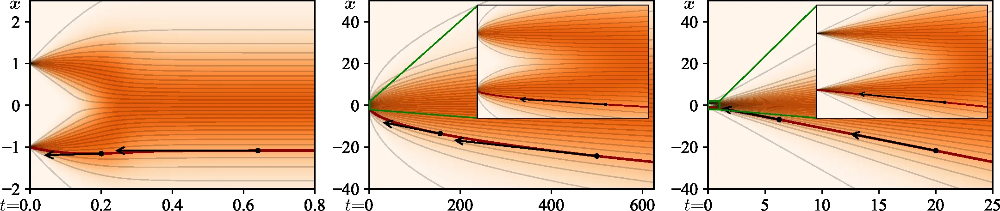
-
One framework, knobs that turn alone (§2, Eq. 1–3). The probability-flow ODE Eq. (1) asks only for a score, and a denoiser fit by Eq. (2) supplies it as Eq. (3); Table 1 rewrites VP, VE and iDDPM+DDIM as knob settings.
-
The schedule is a free choice (§3, Eq. 4, Fig. 3). A scale generalizes the ODE Eq. (4); setting and collapses it to , so one Euler step to is the denoised image: near-straight paths. VP and VE gain most of their speedup here.
-
Heun instead of Euler (§3, Alg. 1). A second evaluation of at the step's far end, averaged trapezoidally, cuts the local error from to for one call more; the last step to reverts to Euler to avoid dividing by 0. Adaptive RK45 here costs more than it returns.
-
Steps warped toward the data end (§3, Eq. 5). Eq. (5) with , , . nearly equalizes truncation error per step, yet 5–10 is far better on images and ships — error made near is what costs most.
-
Stochasticity is Langevin bolted on (§4, Eq. 6, Alg. 2). The SDE splits into the ODE plus a Langevin term whose is the rate old noise is swapped for new Eq. (6): raise it by inside , then step down. It repairs error but bleeds detail.
-
Preconditioning from unit variance (§5, Eq. 7–8). Eq. (7); writing the loss through Eq. (8) exposes a weight and target , from which follow by demanding unit variance and by minimizing , so network error is amplified least. FID barely moves, except where the old parameterization failed — VE on FFHQ-64, 41.62 → 3.39.
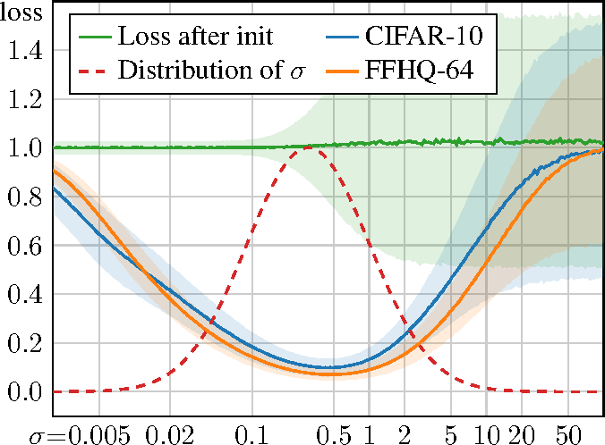
-
Weight and noise distribution (§5, Fig. 5a). flattens the weight so every level starts at loss 1, and aims training there — the only place the trained loss has fallen. Together the largest training gain, 2.29 → 2.05 on unconditional CIFAR-10.
-
Non-leaking augmentation (§5). Geometric transforms applied before the noise, their parameters fed to as conditioning and zeroed at sampling time so an augmented image can never be generated: 2.05 → 1.97 unconditional and 1.88 → 1.79 conditional on CIFAR-10.
-
Experiments (§3, §5, Tab. 2). FID on CIFAR-10, FFHQ-64, AFHQv2-64 and class-conditional ImageNet-64, first by swapping samplers into three finished models, then retraining: the sampler alone cuts steps to within 3% of best FID by 7.3× (VP), 300× (VE) and 3.2× (DDIM) and lifts ImageNet-64 from 2.07 to 1.55; retraining reaches 1.79 / 1.97 on conditional / unconditional CIFAR-10 at 35 NFE and 1.36 on ImageNet.
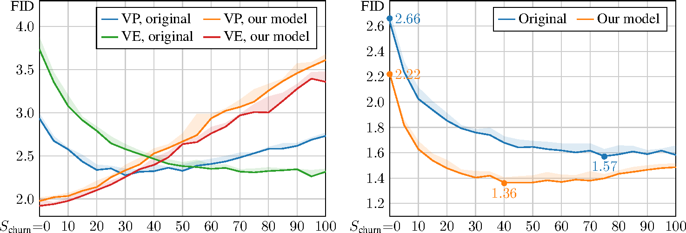
-
Stochasticity is a crutch the model outgrows (Fig. 5b–c). The CIFAR-10 panels cross: what made the old training work ruins the new, so a sampler test measures the model under it. Harder, more diverse ImageNet wants noise — where churn earns its place, says the paper.
-
Hand-tuned heuristics, by the paper's own admission (§4). are a per-model grid search; offsets an denoiser's slight over-denoising. Tuning under stochastic sampling, they warn, quietly misguides architecture and training choices.
The training and sampling algorithm and its code. Follow Algorithm 1 and 2 of paper.
def train():
# 1. Draw one noise level per image, log-normal around the middle of the range
sigma = exp(randn(bs) * 1.2 - 1.2) # P_mean = -1.2, P_std = 1.2
# 2. Corrupt an augmented image; the augmentation parameters ride along as conditioning
y, aug = augment(x) # aug is zeroed at sampling time, so augmentations cannot leak
x_t = y + randn_like(y) * sigma
# 3. Preconditioned denoiser: unit-variance input, unit-variance target, skip chosen to damp error
c_skip = 0.25 / (sigma**2 + 0.25) # sigma_data = 0.5, so sigma_data^2 = 0.25
c_out = sigma * 0.5 / sqrt(sigma**2 + 0.25)
D = c_skip * x_t + c_out * model(x_t / sqrt(sigma**2 + 0.25), log(sigma) / 4, label, aug) # Eq. (7)
# 4. Weighted denoising loss; the weight is 1 / c_out^2, so every level starts at loss 1
loss = ((sigma**2 + 0.25) / (sigma * 0.5)**2 * (D - y)**2).mean() # Eq. (8)
def sample():
# 1. Noise levels warped by rho, so steps shorten toward the data end
i = arange(n_steps) / (n_steps - 1)
t = cat([(80**(1 / 7) + i * (0.002**(1 / 7) - 80**(1 / 7)))**7, [0]]) # Eq. (5); rho = 7, n_steps = 18 is 35 NFE
x = randn(shape) * t[0]
for i in range(n_steps):
# 2. Churn: step the level up, then solve back down -- Langevin correction, off when S_churn = 0
g = min(S_churn / n_steps, sqrt(2) - 1) if S_tmin <= t[i] <= S_tmax else 0 # Alg. 2; Alg. 1 is g = 0
t_hat = t[i] * (1 + g)
x = x + sqrt(t_hat**2 - t[i]**2) * S_noise * randn_like(x) # S_noise just above 1 restores lost detail
# 3. Euler step on dx/dt = (x - D) / t, the tangent that points at the denoiser output
d = (x - denoise(x, t_hat)) / t_hat
x_next = x + (t[i + 1] - t_hat) * d
# 4. Heun correction, skipped on the last step where t = 0 would divide by zero
if t[i + 1] != 0:
d2 = (x_next - denoise(x_next, t[i + 1])) / t[i + 1]
x_next = x + (t[i + 1] - t_hat) * (0.5 * d + 0.5 * d2) # Alg. 1 line 8
x = x_nextLast updated on October 07, 2026 · Citations from Semantic Scholar & Google Scholar; stars from GitHub, October 2026